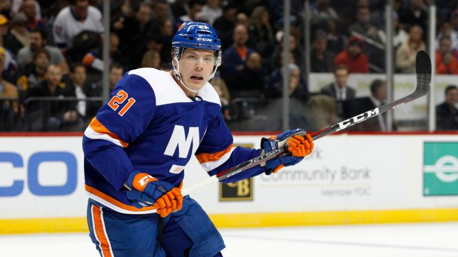

It Looks Like Ilya Sorokin Will Finally Join The Islanders Next Year!!
Alec Radin
New York Islanders fans collectively held their breath when it came out that CSKA was looking to extend Ilya Sorokin. It was an all too familiar feeling, as Sorokin decided to stay in the KHL for three more years back in 2017.
Things are different now though. Garth Snow is no longer the man in charge. It was rumored that Sorokin had no interest in playing for a Garth Snow Islanders team (can you blame him?) but to say things have changed since then would be the understatement of the century.
Now, the Islanders have a hall of fame General Manager, a coach who has won two Jack Adams Awards and a Stanley Cup, and perhaps the best goalie coaches in the world. Why wouldn't Sorokin want to play for this team?
Well, according to Igor Eronko, Sorkin is not considering an extension to stay in the KHL. Sorokin won't consider the offered terms to at least March. At that point, the Isles should be well on their way to another Stanley Cup Playoffs appearance.
Since Ilya Sorokin is 24, he would have to sign a one-year ELC with the Islanders (the max is $925,000) and if he re-signed in the KHL he could come over to the NHL after that deal is done as a UFA.
While $925,000 seems to be well under market value, it would likely be just a one-year thing for Sorokin then the big payday would come as an RFA.
His stats in the KHL seem to justify a big paycheck. This year, the 24-year-old has a .934 save percentage and a 1.57 goals against average in 22 starts. That's video game like numbers.
Over the last five years in the KHL, Sorokin has averaged a .937 save percentage and a 1.40 goals against average. The guy is the best goalie in the world outside of the NHL.

Islanders Prospect Otto Koivula Makes His NHL Debut for Injury Depleted Islanders Team!!!
Alec Radin
The fact that Otto Koivula knew right away why his phone was ringing didn’t diminish the elation of getting his first NHL call-up.
It was almost like jumping in the air, the 21-year-old Finnish forward said on Wednesday in East Meadow after going through his first practice with the Islanders. It’s so exciting to get the phone call. I knew right away what was going to happen. The general manager is not calling you for no reason. Right away, I called my parents.
The injury-depleted Islanders recalled Koivula from their AHL affiliate in Bridgeport while placing forwards Matt Martin and Tom Kuhnhackl on injured reserve retroactive to Friday when both suffered lower-body injuries in a 4-2 win at Ottawa. Both are expected to miss four to six weeks.
Right now, we’re just down to the nuts and bolts in terms of healthy bodies, coach Barry Trotz said. It makes sense we’ve got a little room to bring a healthy body in and Otto gives us that opportunity as a centerman. He can play wing. We just have an extra forward.
You can tell by all of Barry Trotz quotes that he really likes the young player. Koivula may not be up for that long of a stretch but if I had to guess I would think that the Islanders would want Koivula back up at some time this season.